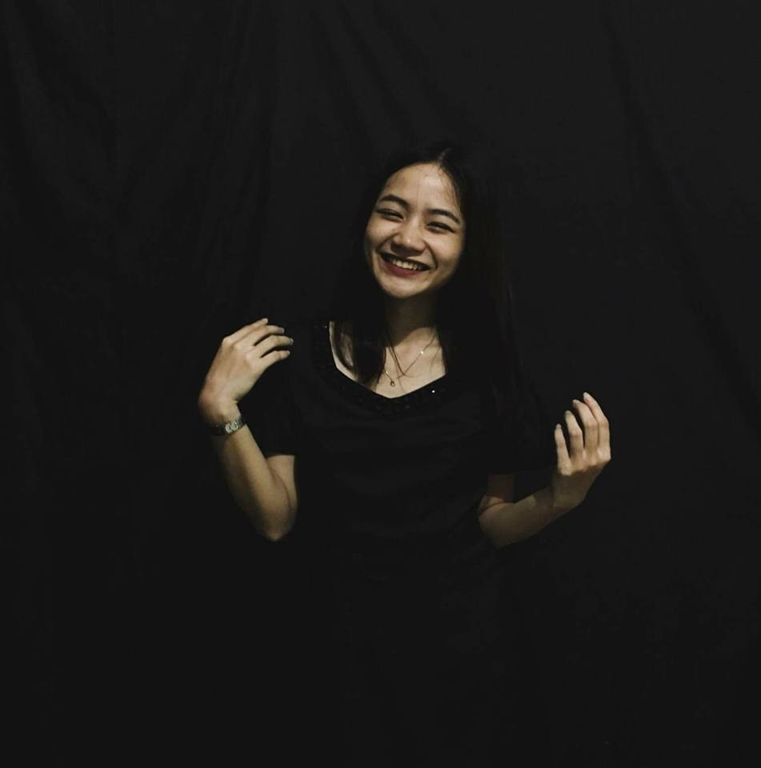

Brave little soul

Hey there! My name is Lealyn T. Juliano. I'm an SLIS student in the University of the Philippines-Diliman. I like neutral colors. Black, white, gray. I spend a lot of time panicking, whether alone or with friends or family or even with the person I like. Yes, I like someone. I'm turning 20 years old this 25th of April! In case you plan on giving me gifts, I like Detective Conan, horror movies, sweets, Assassination Classroom merch, Dan and Phil merch, jacksepticeye merch, and the Game Theorists merch. Kidding! Or am I? Hahaha.
I love to sleep beacuse you don't panic when you sleep.
I like kids. I have three siblings, Xander, Lexus, and Izza. We have two dogs, Jana and Z.